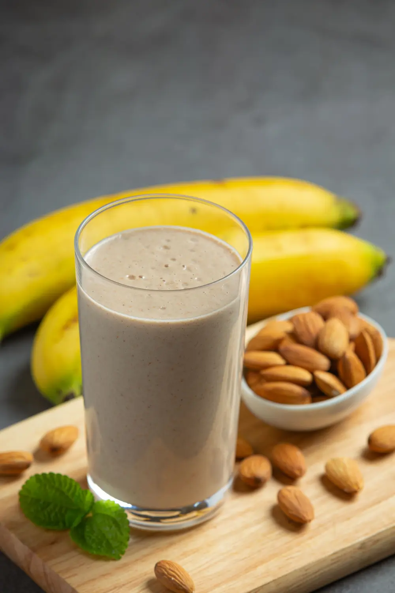

A smoothie is a blended beverage made from a combination of fruits, vegetables, and other ingredients such as yogurt, milk, or juice. Smoothies are known for their creamy texture and refreshing taste. They are often enjoyed as a quick and nutritious breakfast or snack option, providing a convenient way to consume a variety of vitamins and minerals from fruits and vegetables. Smoothies can be customized with different ingredients to suit individual preferences and dietary needs, making them a versatile and popular choice for a healthy lifestyle.